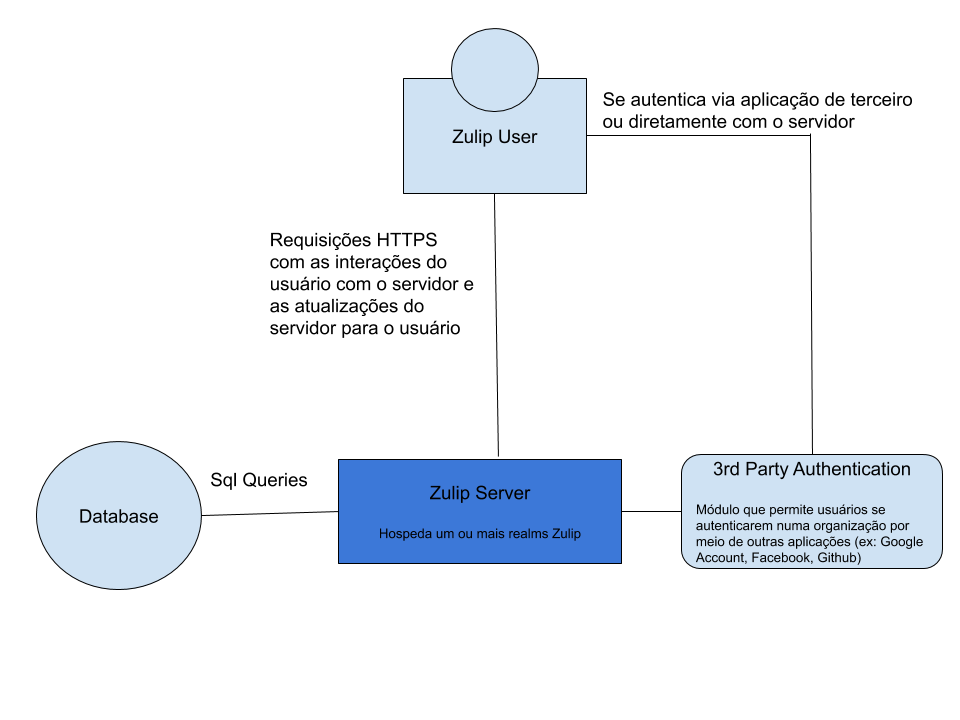
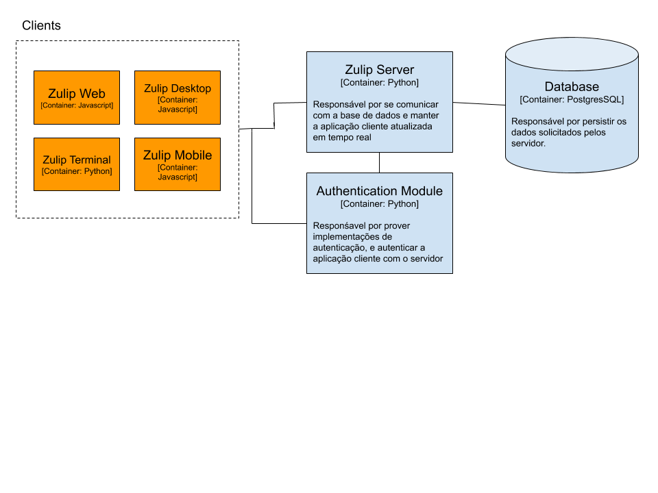

Descrição arquitetural do Zulip
Autores
Este documento foi produzido por João Maurício Alves Valverde Carvalho.
- Matrícula: 115211593
- Contato: joao.carvalho@ccc.ufcg.edu.br
- Projeto documentado: https://github.com/zulip/zulip
Descrição Arquitetural
Este documento descreve parte da arquitetura do projeto Zulip. Essa descrição foi baseada principalmente no modelo C4.
Descrição Geral
Zulip é um aplicativo de chat em grupo. O zulip combina o imediatismo de um chat em tempo real com a organização e produtividade de um modelo de threads baseado nos emails. Mais informações sobre o produto podem ser encontradas nest link.
O zulip
Objetivo geral
Implementar um serviço de chat em tempo real em grupo para uma ampla gama de organizações e equipes. De empresas a projetos voluntários.
Objetivos Específicos
Um servidor pode hospedar múltiplos realms (organizações) Zulip, cada um no seu domínio. Cada realm é uma instância única com os seus próprios usuários, streams, customizações e etc.
Contexto

No diagrama de contexto, podemos ver que o Zulip consiste de uma aplicação backend, um banco de dados e aplicações cliente. Essas aplicações cliente fazem requisições por meio do protocolo HTTPS para a API do Zulip Server, que por sua vez se comunica com o banco de dados, atualizando mensagens, threads, canais, entre outros. Além disso, o Zulip fornece um módulo que implementa autenticação por meio de diversas aplicações de terceiros, como o Github, Google account e Facebook.
Containers

Clients
Aplicações que rodam no lado do cliente, e são responsáveis por prover a interação do cliente com uma determinada instância de servidor Zulip por meio de requisições HTTPS e também via web socket para eventos. São fornecidas funcionalidades como:
- Listagem de canais
- Listagem de threads
- Listagem de usuários
- Painel de configuração do realm
- Caixa para composição de mensagem
- Funcionalidade de criação de canais/threads
- Espaço de leitura de mensagens
Zulip Web
Principal aplicação cliente, roda no domínio específico da organização (ex: chat.zulip.org).
Zulip Terminal
Permite rodar uma versão simplificada do Zulip diretamente do terminal do usuário.
Zulip Mobile
Aplicação mobile escrita em React Native que permite utilização do Zulip nas plataformas Android e iOS.
Zulip Desktop
Aplicação escrita com o framework Electron que permite rodar o zulip diretamente na máquina, sem necessidade de utilizar o browser.
Zulip Server
Aplicação escrita em Python, utilizando o framework Django que implementa praticamente toda lógica de negócios do Zulip. Serve aplicações client com o conteúdo das mensagens/canais via requisições HTTPS e também atualiza o banco de dados via queries SQL.
Os endpoints são divididos nas seguintes entidades:
Messages
Entidade que representa uma mensagem. Mensagens podem ser enviadas, editadas, podem ter anexos, emojis customizados. Existem também endpoints para pegar o histórico de edição de uma mensagem.
Streams
Entidade que representa uma stream (canal). Um usuário pode se inscrever num canal, criar, deletar, criar tópicos.
Users
Entidade que representa um usuário
Server & Organização
Entidade que representa uma organização que hospeda um servidor Zulip
Módulo de autenticação
Módulo responsável por autenticar um usuário a aplicação. Além de prover sua própria implementação, ele também disponibiliza integração com diversas aplicações de terceiros para que seja possível configurar 3rd party authentication.
Banco de dados
Responsável por persistir os dados
Components
Nesta seção, focarei nos componentes do Zulip Server.

Nginx
Front-end do servidor. Recebe todo o tráfego da parte do cliente, repassando para o Tornado/Django e vice-versa. Ele lida com solicitações HTTP de acordo com as regras estabelecidas nos vários arquivos de configuração encontrados em zulip/puppet/zulip/files/nginx/.
PostgreSQL
PostgreSQL (também conhecido como Postgres) é o banco de dados que armazena todos os dados persistentes, ou seja, dados que devem viver além da sessão atual do usuário.
Django
É a principal aplicação server. Implementa toda a lógica de negócios do Zulip na parte do servidor, lidando com todas as rotas, exceto a de eventos.
Tornado
O Tornado é um servidor assíncrono e destina-se especificamente a manter abertas dezenas de milhares de conexões de longa duração - ou seja, rotas que mantêm uma conexão persistente de cada cliente em execução. Por este motivo, é responsável pela entrega do evento nova mensagem, mas não muito mais.
Visão de Informação
Aqui vamos focar na entidade mensagem. Embora enviar uma mensagem em um produto de bate-papo possa parecer simples, há muita complexidade necessária para fazer uma experiência de qualidade profissional.
Lista de mensagens - Frontend
Uma lista de mensagens é o nome dado para o conceito de feed de mensagens no front-end. Existem 3 principais estruturas:
- Uma message_list_data tem apenas os dados de sequenciamento de quais IDs de mensagem vão em que ordem.
- Uma message_list é construída em cima de message_list_data e contém, adicionalmente, os dados para uma lista de mensagens visíveis para o usuário.
- Uma message_list_view é construída sobre message_list e contém adicionalmente detalhes de renderização como por exemplo uma janela de até 400 mensagens que está presente no DOM no momento, controles de posição de rolagem, etc.
Implementação backend
O fluxo de uso para enviar uma mensagem segue o seguinte fluxo no backend:
- event_queue: Envia emails e notificações mobiele para usuários que precisam receber notificação desta mensagem (ex: usúario marcado no corpo da mensagem)
- check_message: Verifica se o input é uma mensagem válida
- do_send_message: Rotina que de fato envia uma mensagem. Salva o objecto no banco de dados e envia um evento de Mensagem para o subsitema de eventos
Contribuições Concretas
Realizei algumas contribuições no Zulip, segue a lista:
Contribuições já aceitas
- stream_color.js: Fix color picker not saving custom color.
- compose.js: Fix compose box didn’t collapse.
- stream settings: Fixing a bug where the stream-list in the stream settings would list all streams but wold show the ‘Subscribed’ label enabled by resetting the control variable when setting up the page.
- Settings: Change username to
bot emailin bot settings